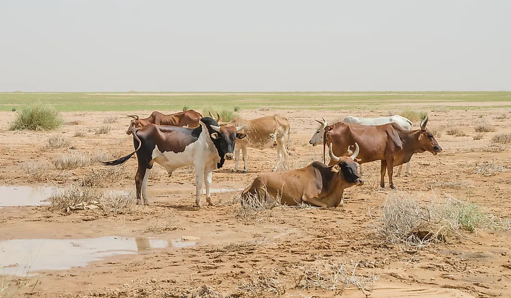

Extra information
Summary

Background:
Independent from France in 1960, Mauritania annexed the southern third of the former Spanish Sahara (now Western Sahara) in 1976 but relinquished it after three years of raids by the Polisario guerrilla front seeking independence for the territory. Maaouya Ould Sid Ahmed TAYA seized power in a coup in 1984 and ruled Mauritania with a heavy hand for more than two decades. A series of presidential elections that he held were widely seen as flawed. A bloodless coup in August 2005 deposed President TAYA and ushered in a military council that oversaw a transition to democratic rule. Independent candidate Sidi Ould Cheikh ABDALLAHI was inaugurated in April 2007 as Mauritania's first freely and fairly elected president. His term ended prematurely in August 2008 when a military junta led by General Mohamed Ould Abdel AZIZ deposed him and installed a military council government. AZIZ was subsequently elected president in July 2009 and sworn in the following month. AZIZ sustained injuries from an accidental shooting by his own troops in October 2012 but has continued to maintain his authority. He was reelected in 2014 to a second and final term as president (according to the present constitution). The country continues to experience ethnic tensions among three major groups: Arabic-speaking descendants of slaves (Haratines), Arabic-speaking "White Moors" (Beydane), and members of Sub-Saharan ethnic groups mostly originating in the Senegal River valley (Halpulaar, Soninke, and Wolof). Mauritania confronts a terrorism threat by al-Qa'ida in the Islamic Maghreb, which launched successful attacks between 2005 and 2011.
The activities of Al-Qaeda in the Islamic Maghreb (AQIM), and similar groups, pose a severe security threat to Mauritanians and foreign visitors. AQIM launched a series of attacks in Mauritania between 2005 and 2011, murdering American and foreign tourists and aid workers, attacking diplomatic and government facilities, and ambushing Mauritanian soldiers and gendarmes. A successful strategy against terrorism that combines dialogue with the terrorists and military actions has prevented the country from further terrorist attacks since 2011.